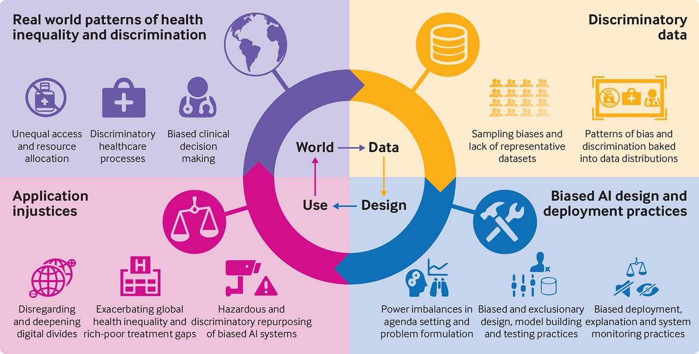

When Machines Learn Our Biases: The Real-World Consequences
Understanding how historical data shapes modern machine learning systems

Currently, machine learning models rely on vast datasets in order to be able to produce accurate and reliable outcomes. Whether that is using a dataset of bank transactions to learn how to detect fraud or using a dataset of emails to learn the patterns of spam. But applications of AI and machine learning algorithms go beyond this. In the last few years, they’ve been implemented in high-stake applications such as criminal court sentencing decisions, policing algorithms, patient diagnoses and to automate job hiring processes.
Just image how much automation goes on behind the scenes? Let me give you an idea. ’According to research, 77% of companies are either using or exploring the use of AI in their businesses, and 83% of companies claim that AI is a top priority in their business plans (Prestianni, 2025).”

Although machine learning is a subset of AI, it’s application in industry is similarly vast. So let us breakdown what we mean by bias and why they are problematic during the development of such models.
What is a Bias?
A bias is the tendency to lean or favor a particular ideology or standpoint. What about a historical bias? These emerge from past social, racial, political and economic prejudice, and become systematically implemented in data over time.
Why is this important?
If the goal is to build and deploy reliable models that can help alleviate the human labor involved in many processes, we need to ensure that these systems learn as many meaningful patterns as possible from existing data, whilst fairly and accurately representing the contexts and people they are meant to serve. Additionally, this also maintains trust and transparency in machine learning and the use of AI in real-world applications.
Fundamental Goal: Develop and Deploy advancements in data science whilst maintaining fairness and equity.
Many companies now rely on these automated systems in order to make decisions. In fact, ‘An estimated 99% of Fortune 500 companies now use some form of automation in their hiring process’ (Milne, 2024). Take for instance, company X, which is in the process of recruiting a new full-time lead machine learning engineer. Of course, while historical biases present in the data used to build such an algorithm are often unavoidable, it is still important to recognize that systematic discrimination exists and is often embedded in a lot of the data used to build these algorithms. If this company blindly trains a model on such data, after conducting all the necessary cleaning, preprocessing and transformations of course, it may find that many of the outcomes tend to favor candidates from certain backgrounds, discrediting those from marginalized communities, not because of their technical ability, but because of the inherent racial bias present in the data that was not acknowledged during the training phase. Back in 2015, it was actually found that Amazon, one of the largest tech companies today, used an AI recruiting tool that was biased against women, largely because it was trained on historical data dominated by male candidates in the tech industry (Dastin, 2018).

Our responsibility as data scientists isn’t just about building the best performing models or optimizing strategies for feature engineering, but it is also about ensuring that we put out into the world is just and fair. Otherwise, many consequences may arise including lost opportunities, reinforced inequalities and overall reduced trust in AI and machine learning driven processes.
Case Study: Durham’s Policing Algorithm (HART)
In 2021, Durham Police was criticised for their use of a flawed AI profiling tool that used ‘crude and discriminatory’ data profiles at the core of it’s algorithm (Fair Trials, 2022). The consequences? Targetted and discriminatory policing of low income neighborhoods, where more individuals were likely to be arrested and charged, with many of the targtted postal codes in the city being labelled as ‘multicultural’ and ‘overcorwded’.
The HART algorithm was also found to have a predictive accuracy of 53.8%, meaning it was likely to make correct predictions approximately half the time, yet continued to be utilized from 2016 to 2021.
Long-term consequences
Not only can these exacerbated biases be harmful to communities, but the consquences also extend to the tech and data science industries as well. Below I summarise the main long-term conseuqences of flawed training data in machine learning:
- Unjust loss of oppertunities
- Lack of trust in the use of automative technology
- Lack of respect for the industry
- Lack of transparency and understanding in important decision-making processes
What’s the Solution?
Looking at Mitigating Strategies
Eliminating all forms of bias is nearly impossible, but implementing stratgies that can mitigate their effects is definitely possible.

1. Data Driven Approaches
- Continuing to collect more data: Collecting more representative data and ensuring certain groups are not underrepresented can help counter the effects of existing datasets that are flawed and biased.
2. Maintaining Human Oversight
Auditing and evaluating data and model performance: Data Scientists and other industry professionals should always be evaluating the quality of a dataset with regard to bias. They should continuously conduct thorough exploratory analyses to flag for potential unethical trends that could be captured by a machine learning model. Additionally, continuously evaluate model performance with respect to each subgroup of people, especially vulnerable subgroups.
- For example: HR employees should take note if their algorithm shows consistent preference for White Male Applicants compared to other racial minorities.
Keep humans in the decision making process: When it comes to high stake decisions, avoid complete reliance on automation and model predictions.
- For example: In healthcare, the decision for whether a patient should receive chemotherapy or radiation treatment for their cancer diagnoses should not be solely decided by an algorithm. Health data is often flawed whereby it fails to capture important gender, racial and socioeconomic factors influencing health outcomes. Health care professionals should validate model decisions with the full knowledge of a pateint’s demographic and medical history.
As difficult as it may be, adopting an ethical framework even in the world of data science is a must. Without these considerations, there would be catastrophic backlash towards the use of machine learning models in the real-world. It is the responsibility of data scientists and related professions to ensure that historical biases are not further perpetuated by the algorithms they build and continue to generate strategies that attempt to eliminate their harmful effects on the world.
References:
Leslie, D., Mazumder, A., Peppin, A., Wolters, M. K., & Hagerty, A. (2021). Does “AI” stand for augmenting inequality in the era of covid-19 healthcare?. bmj, 372.
Prestianni, T. (2025, March 4). 131 AI statistics and trends for 2026. National University. https://www.nu.edu/blog/ai-statistics-trends/
Fair Trials. (2022, August 15). FOI reveals over 12,000 people profiled by flawed Durham police predictive AI tool. Fair Trials. https://www.fairtrials.org/articles/news/foi-reveals-over-12000-people-profiled-by-flawed-durham-police-predictive-ai-tool/
Milne, S. (2024, October 31). AI tools show biases in ranking job applicants’ names according to perceived race and gender. UW News. https://www.washington.edu/news/2024/10/31/ai-bias-resume-screening-race-gender/
Dastin, J. (2018, October 10). Amazon scraps secret AI recruiting tool that showed bias against women. Reuters. https://www.reuters.com/article/world/insight-amazon-scraps-secret-ai-recruiting-tool-that-showed-bias-against-women-idUSKCN1MK0AG/
Word count: 1074